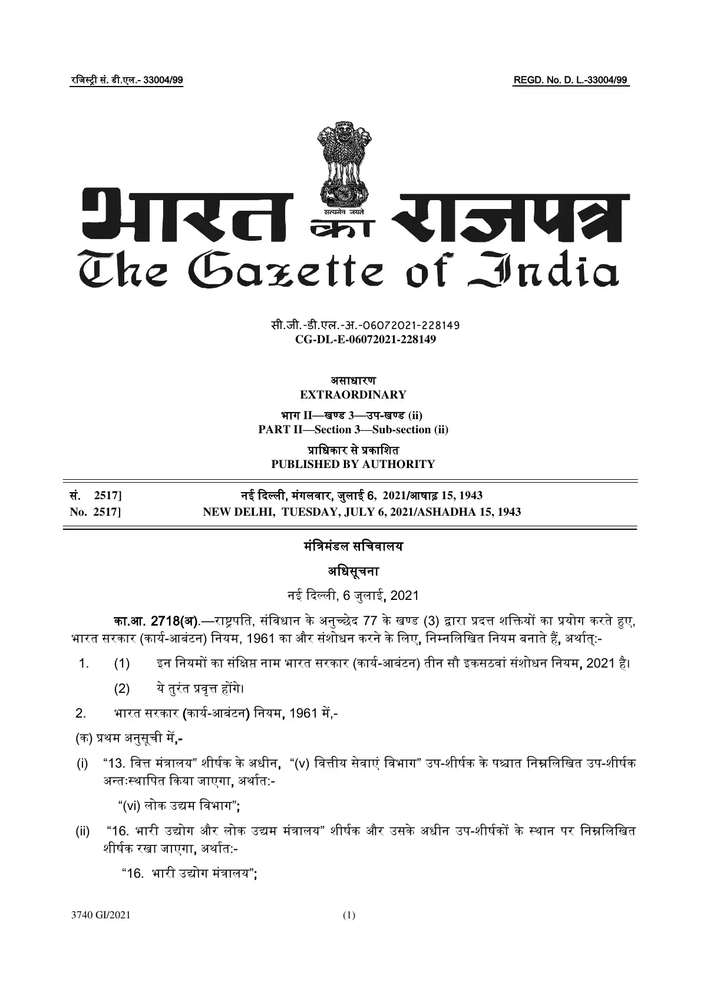
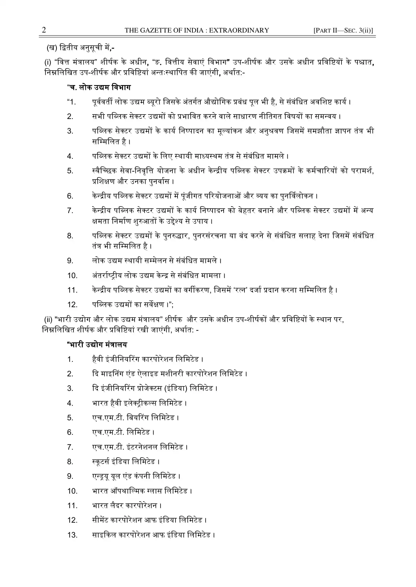
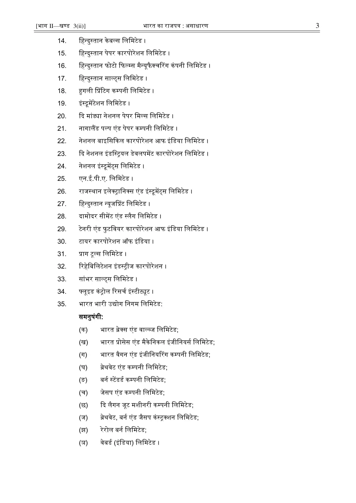
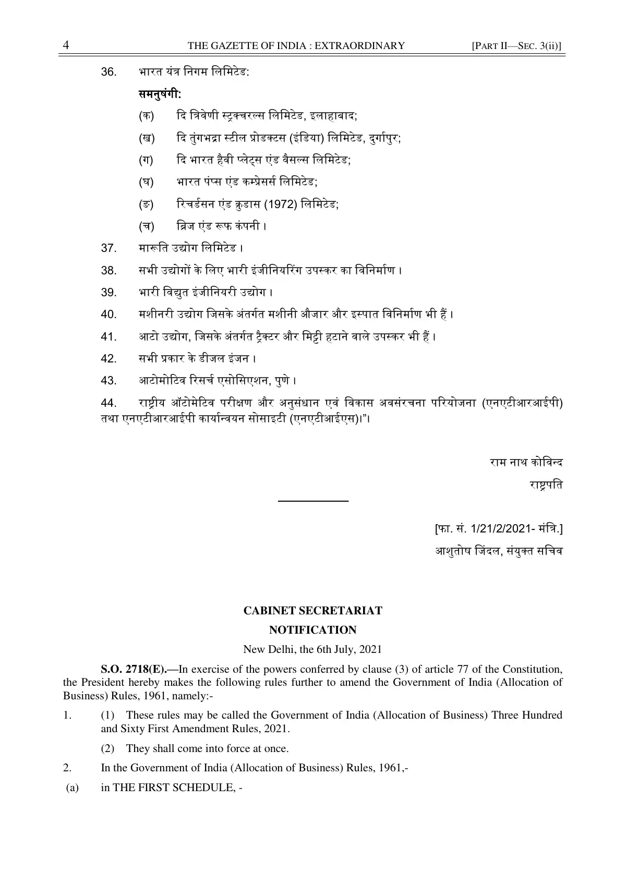
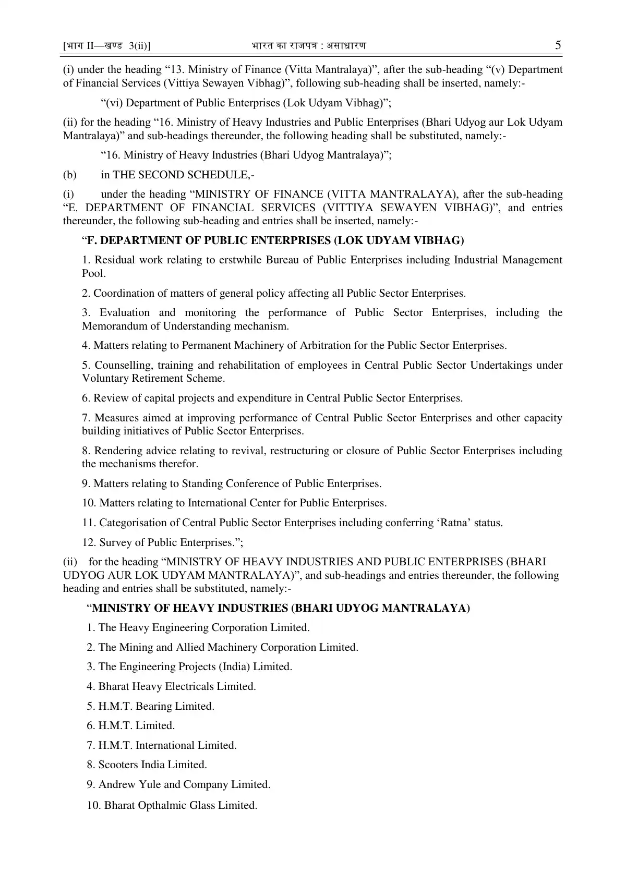
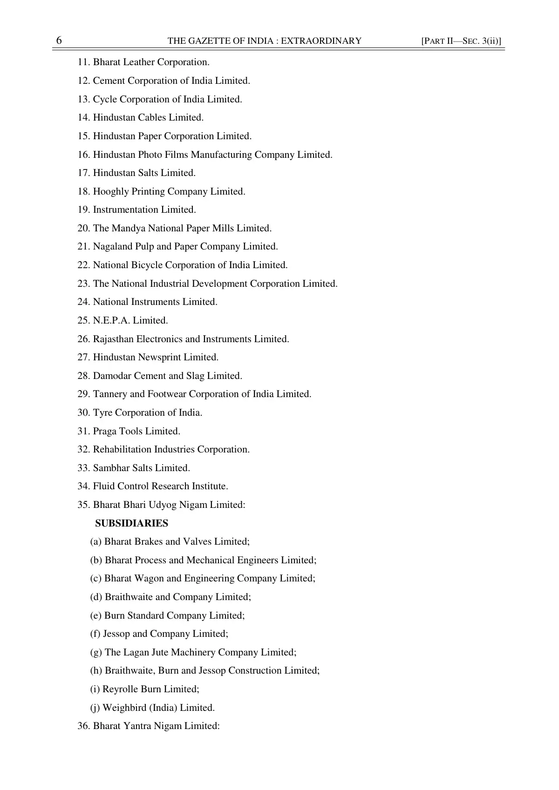
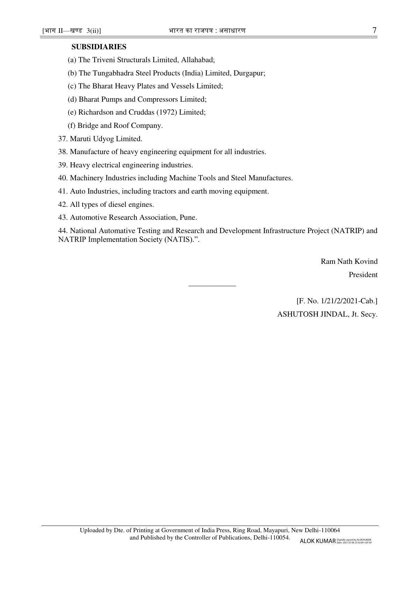

Amendment #361 (S.O. 2718(E), 2021)
4 changes: 2 to the First Schedule, 2 to the Second Schedule. 4 applied
What it did to the ministries
- moved12 subjects move from Ministry of Heavy Industries and Public Enterprises to Ministry of Finance change 1, 2 · histories: Heavy Industries, Finance
- renamedMinistry of Heavy Industries and Public Enterprises is renamed Ministry of Heavy Industries change 2 · histories: Heavy Industries
The order, page by page
Page 1 of 7

Page 2 of 7

Page 3 of 7

Page 4 of 7

Page 5 of 7

1234after Schedule 1 › Ministry of Finance › Department of Financial Services
- vi. Department of Public Enterprises
applied at schedule 1 › ministry 13 › department vi in the Rules after #361
Schedule 1 › Ministry of Heavy Industries and Public Enterprises
- 16. Ministry of Heavy Industries
applied at schedule 1 › ministry 16 in the Rules after #361
after Schedule 2 › MINISTRY OF FINANCE › DEPARTMENT OF FINANCIAL SERVICES
- F. DEPARTMENT OF PUBLIC ENTERPRISES
- 1. Residual work relating to erstwhile Bureau of Public Enterprises including Industrial Management Pool.
- 2. Coordination of matters of general policy affecting all Public Sector Enterprises.
- 3. Evaluation and monitoring the performance of Public Sector Enterprises, including the Memorandum of Understanding mechanism.
- 4. Matters relating to Permanent Machinery of Arbitration for the Public Sector Enterprises.
- 5. Counselling, training and rehabilitation of employees in Central Public Sector Undertakings under Voluntary Retirement Scheme.
and 7 more
- 6. Review of capital projects and expenditure in Central Public Sector Enterprises.
- 7. Measures aimed at improving performance of Central Public Sector Enterprises and other capacity building initiatives of Public Sector Enterprises.
- 8. Rendering advice relating to revival, restructuring or closure of Public Sector Enterprises including the mechanisms therefor.
- 9. Matters relating to Standing Conference of Public Enterprises.
- 10. Matters relating to International Center for Public Enterprises.
- 11. Categorisation of Central Public Sector Enterprises including conferring „Ratna‟ status.
- 12. Survey of Public Enterprises.
applied at schedule 2 › ministry MINISTRY OF FINANCE › department F in the Rules after #361
Schedule 2 › MINISTRY OF HEAVY INDUSTRIES AND PUBLIC ENTERPRISES
- MINISTRY OF HEAVY INDUSTRIES
- 1. The Heavy Engineering Corporation Limited.
- 2. The Mining and Allied Machinery Corporation Limited.
- 3. The Engineering Projects (India) Limited.
- 4. Bharat Heavy Electricals Limited.
- 5. H.M.T. Bearing Limited.
and 55 more
- 6. H.M.T. Limited.
- 7. H.M.T. International Limited.
- 8. Scooters India Limited.
- 9. Andrew Yule and Company Limited.
- 10. Bharat Opthalmic Glass Limited.
- 11. Bharat Leather Corporation.
- 12. Cement Corporation of India Limited.
- 13. Cycle Corporation of India Limited.
- 14. Hindustan Cables Limited.
- 15. Hindustan Paper Corporation Limited.
- 16. Hindustan Photo Films Manufacturing Company Limited.
- 17. Hindustan Salts Limited.
- 18. Hooghly Printing Company Limited.
- 19. Instrumentation Limited.
- 20. The Mandya National Paper Mills Limited.
- 21. Nagaland Pulp and Paper Company Limited.
- 22. National Bicycle Corporation of India Limited.
- 23. The National Industrial Development Corporation Limited.
- 24. National Instruments Limited.
- 25. N.E.P.A. Limited.
- 26. Rajasthan Electronics and Instruments Limited.
- 27. Hindustan Newsprint Limited.
- 28. Damodar Cement and Slag Limited.
- 29. Tannery and Footwear Corporation of India Limited.
- 30. Tyre Corporation of India.
- 31. Praga Tools Limited.
- 32. Rehabilitation Industries Corporation.
- 33. Sambhar Salts Limited.
- 34. Fluid Control Research Institute.
- 35. Bharat Bhari Udyog Nigam Limited: SUBSIDIARIES
- a. Bharat Brakes and Valves Limited
- b. Bharat Process and Mechanical Engineers Limited
- c. Bharat Wagon and Engineering Company Limited
- d. Braithwaite and Company Limited
- e. Burn Standard Company Limited
- f. Jessop and Company Limited
- g. The Lagan Jute Machinery Company Limited
- h. Braithwaite, Burn and Jessop Construction Limited
- i. Reyrolle Burn Limited
- j. Weighbird (India) Limited.
- 36. Bharat Yantra Nigam Limited: SUBSIDIARIES
- a. The Triveni Structurals Limited, Allahabad
- b. The Tungabhadra Steel Products (India) Limited, Durgapur
- c. The Bharat Heavy Plates and Vessels Limited
- d. Bharat Pumps and Compressors Limited
- e. Richardson and Cruddas (1972) Limited
- f. Bridge and Roof Company.
- 37. Maruti Udyog Limited.
- 38. Manufacture of heavy engineering equipment for all industries.
- 39. Heavy electrical engineering industries.
- 40. Machinery Industries including Machine Tools and Steel Manufactures.
- 41. Auto Industries, including tractors and earth moving equipment.
- 42. All types of diesel engines.
- 43. Automotive Research Association, Pune.
- 44. National Automative Testing and Research and Development Infrastructure Project (NATRIP) and NATRIP Implementation Society (NATIS).
applied at schedule 2 › ministry MINISTRY OF HEAVY INDUSTRIES AND PUBLIC ENTERPRISES in the Rules after #361
read page break
Page 6 of 7

Page 7 of 7

How this document was read
From the Government of India (Allocation of Business) Rules, 1961 and their amendments, as published by the Cabinet Secretariat (cabsec.gov.in), read by orgpedia. The readings of the older scanned gazettes have known gaps.